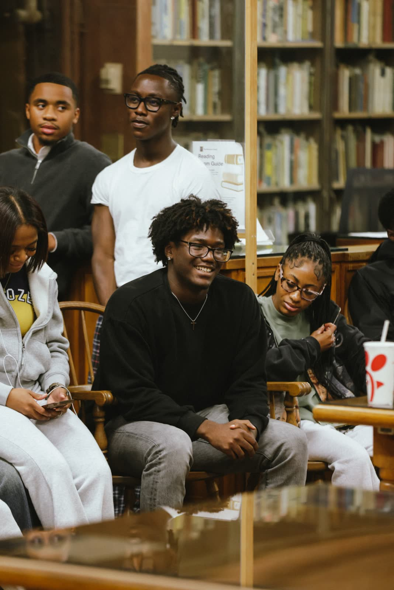
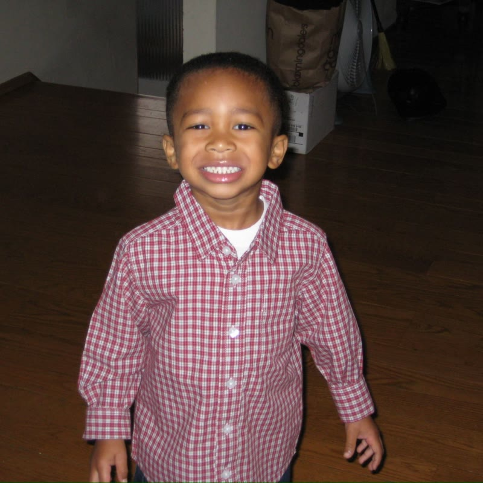

Walk N’ Talk
Sep 16, 2026 · National Mall · 300+ people
Photos on Instagram ↗
Building community through thought‑provoking conversations.
29M+views across TikTok and Instagram
1.4MTikTok likes
20K+followers across platforms
9free community events hosted
Full numbers for partners →
Most watched · our top TikToks and Reels by views, swipe for more
Where to find us
How did we get here?
We Just Chattin started with a spatula, a camera and one question on Howard’s Yard. We stopped strangers, asked them something real, and posted exactly what they said. People didn’t just watch. They argued in the comments, sent the clips to their group chats, and asked where they could come say their piece in person.
So we gave them a room. Our Wednesday sessions on campus put students who disagree at the same table, and most of them leave as friends. We took the conversation outside with Walk N’ Talk on the National Mall, and now we’re bringing it to other campuses. Almost thirty million views later, the goal hasn’t changed: get people who would never talk to each other in the same place, and let them chat.
Sincerely,Sizwe Morris-LouisFounder of We Just Chattin

Next event
Our events are free and built for DMV college students and young professionals. Get paired with a stranger, skip the small talk, leave with a new connection.
- Free and open to everyone. Come solo or bring a friend.
- Paired, thought-provoking conversations.
- New events most months. Follow Instagram for dates.
Past events · proof we showed up

Session 6
Oct 7, 2026 · Founders Library, Howard
Recap on Instagram ↗

Session 4
Sep 23, 2026 · Founders Library, Howard
Recap on Instagram ↗
Season 2 sessions · Wednesdays at 7 PM on Howard’s campus
- Session 10Wed, Nov 4 · Douglass Hall 104
- Session 9Wed, Oct 28 · Douglass Hall 013
- Session 8Wed, Oct 21 · Douglass Hall 013
- Session 7Wed, Oct 14 · Founders Library
- Session 6Wed, Oct 7 · Founders Library
- Session 5Wed, Sep 30 · Moorland-Spingarn Reading Room
- Session 4Wed, Sep 23 · Founders Library
Team



Custom episodes, event sponsorships, product integrations. We’ll find the fit.
Partner with us →